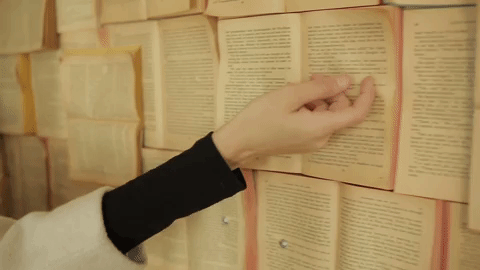

Згуря Дарья Станиславовна

Меня зовут Даша. Я родилась в Хабаровске и всю свою сознательную жизнь прожила в этом городе. Училась в лицее "РИТМ", где литературу преподавала прекрасная учительница, которая привила мне огромную любовь к чтению и анализированию книг. Несмотря на то что долгое время я не получала абсолютно никакого удовольствия от этого занятия, со временем я всё же прочувствовала всю прелесть данного времяпрепровождения. На данный момент мой любимый писатель - Эрих Мария Ремарк. Мне очень близки его мысли и взгляд на жизнь. "Нет, — быстро сказал он. — Только не это. Остаться друзьями? Развести маленький огородик на остывшей лаве угасших чувств? Нет, это не для нас с тобой. Так бывает только после маленьких интрижек, да и то получается довольно фальшиво. Любовь не пятнают дружбой. Конец есть конец". "Нет, — быстро сказал он. — Только не это. Остаться друзьями? Развести маленький огородик на остывшей лаве угасших чувств? Нет, это не для нас с тобой. Так бывает только после маленьких интрижек, да и то получается довольно фальшиво. Любовь не пятнают дружбой. Конец есть конец".Только несчастный знает, что такое счастье. Счастливец ощущает радость жизни не более, чем манекен: он только демонстрирует эту радость, но она ему не дана. Свет не светит, когда светло. Он светит во тьме.""Раскаяние — самая бесполезная вещь на свете. Вернуть ничего нельзя. Ничего нельзя исправить. Иначе все мы были бы святыми. Жизнь не имела в виду сделать нас совершенными. Тому, кто совершенен, место в музее." Мои любимые произведения Ремарка:
Также из авторов могу выделить:
- Набокова В.В.
- Бунина И.А.
- Джейн Остин


2020 © Згуря Даша